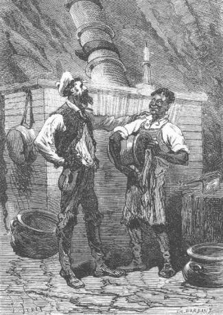

Three years had passed since the prisoners from Richmond had fled and at all times during these three years they spoke of their country, always present in their thoughts.
They had no doubt that the Civil War was now at an end and it seemed impossible to them that the just cause of the North had not been victorious. But what were the events of this terrible war? How much blood had been spilled? Which of their friends had succumbed in battle? They often spoke of these things, still without knowing when they would see their country again. To return there if only for a few days, to renew social ties with the inhabited world, to establish communication between their native land and their island, to pass the longest, perhaps the best part of their lives in this colony that they had founded and which would then become a metropolis, was this then an unrealistic dream?
But there were only two ways to realize this dream: either a vessel would show itself some day in the waters of Lincoln Island or the colonists would themselves construct a boat large enough to take to sea and reach the nearest land.
“Unless,” said Pencroff, “our genie himself furnishes us with the means to repatriate ourselves.”
And truly if someone told Pencroff and Neb that a vessel of three hundred tons was waiting for them in Shark Gulf or at Port Balloon, they would not even have shown any surprise. In their state of mind they expected anything.
But Cyrus Smith, being less confident, advised them to return to reality by proposing that they construct a boat, a truly urgent task, since they must bring a document to Tabor Island as soon as possible which would indicate Ayrton’s new residence.
The Bonadventure no longer existed. Six months at least would be necessary for the construction of a new vessel. Now, with winter coming on, the voyage could not be made before next spring.
“We therefore have time to prepare for the fine season,” said the engineer, who chatted about these things with Pencroff. “I therefore think, my friend, that since we have to make a boat again, it would be best to give it larger dimensions. The arrival of the Scotch yacht at Lincoln Island is very problematic. Perhaps it even came in the last few months and left again after having vainly looked for some trace of Ayrton. Would it not therefore be appropriate to construct a vessel which, if need be, could carry us to the Polynesian archipelagoes or to New Zealand? What do you think?”
“I think, Mister Cyrus,” replied the sailor, “I think that you are just as capable of making a large boat as a small one. Neither the wood nor the tools are lacking. It is only a question of time.”
“And how much time would be required for the construction of a vessel of two hundred fifty to three hundred tons?” asked Cyrus Smith.
“Seven or eight months at least,” replied Pencroff. “But let’s not forget that when winter comes, wood is difficult to work in the frost. Let’s therefore count on a few idle weeks and if our boat is ready by next November, we should consider ourselves lucky.”
“Well,” replied Cyrus Smith, “that will be the best time to undertake a crossing of some importance either to Tabor Island or to a further land.”
“In fact, Mister Cyrus,” replied the sailor, “make your plans, the workers are ready and I imagine that Ayrton will lend us a helping hand in these circumstances.”
The colonists were consulted and approved of the engineer’s project and in truth, it was the best thing to do. It is true that the construction of a vessel of two to three hundred tons was a large undertaking but the colonists had a confidence in themselves justified by the successes already obtained.
Cyrus Smith therefore occupied himself with making the plans for the vessel. During this time, his companions were employed in felling and carting the trees which would provide the curved wood, the ribs and the planking. It was the Forest of the Far West which gave the best species of oaks and elms. They profited from the path already made at the time of the last excursion to open a practical route which took the name of Route of the Far West. The trees were transported to the Chimneys where a shipyard was established. As to the route in question, it was traced out capriciously. It was a little the choice of wood which determined the path but it facilitated access to a large portion of Serpentine Peninsula.
It was important that the wood be promptly cut up and sawed because they could not use it while it was still green and time must be left for it to harden. The carpenters therefore worked with ardor during the month of April, which was troubled only by a few rather violent equinoxial windstorms. Master Jup helped them skillfully either by climbing to the top of a tree in order to attach the felling ropes or by using his robust shoulders to carry the lopped off trunks.
All of this wood was piled up under a large shed which was constructed near the Chimneys and there it remained until it would be put to use.
The month of April was rather fine, as the month of October often is in the northern zone. At the same time, the agricultural work was actively carried on and soon all trace of the devastation had disappeared from Grand View Plateau. The mill was rebuilt and new buildings rose where the poultry yard had been. It seemed necessary to construct it to larger dimensions because the avian population had increased considerably. The stables now housed five onagers, four who were vigorous and well trained for harness or riding, and a young one recently born. The colony’s equipment was increased with a plow. The onagers were employed to pull it, like true oxen from Yorkshire or from Kentucky. Each of the colonists shared in the work and no hands were idle. The laborers were in fine health and in fine humor. They animated the evenings at Granite House by forming a thousand plans for the future.
It goes without saying that Ayrton completely shared in the common existence and there no longer was any question about his going to live at the corral. Nevertheless he was always sad, not very communicative, and joined in the work rather than in the pleasures of his companions. But he was a rugged laborer at his tasks, vigorous, skilful, ingenious and intelligent. He was esteemed and loved by everyone and he could not but be aware of it.
The corral, however, was not abandoned. Every two days one of the colonists, taking the cart or riding one of the onagers, went to look after the flock of sheep or goats and carry back milk for Neb’s pantry. At the same time, these excursions were occasions for hunting. Herbert and Gideon Spilett—with Top in front—took to the road to the corral more often than any of their companions, and with their excellent weapons, capybara, agouti, kangaroo, wild boar and wild pig for the large game and duck, grouse, heath fowl, jacamar and snipe for the small game, were never lacking at home. The products of the warren, those of the oyster bed, some turtles which were prized, a new catch of excellent salmon which still came to swarm in the waters of the Mercy, the vegetables from Grand View Plateau, the natural fruits from the forest, it was riches upon riches and Neb, the master cook, could barely cope with storing it.
It goes without saying that the telegraphic wire thrown between the corral and Granite House was repaired and that it was used whenever one or another of the colonists found himself at the corral and judged it necessary to pass the night there. Besides, the island was secure now and no aggression was to be feared—at least on the part of men.
However what had happened once could happen again. A descent of pirates and even of escaped convicts was always to be feared. It was possible that some companions and accomplices of Bob Harvey, still detained at Norfolk, were in on his secret plans and would attempt to imitate him. The colonists examined the approaches to the island every day and their telescope swept the large horizon which enclosed Union Bay and Washington Bay. When they went to the corral, they examined with no less care the western part of the ocean and by climbing the buttress, their gaze could cover a rather large sector of the western horizon.
Nothing suspicious appeared but still they must always be on their guard.
One evening the engineer told his friends about his plans to fortify the corral. It seemed prudent to him to increase the height of the palisaded enclosure and to flank it with a sort of blockhouse in which, if need be, they could hold out against an enemy troop. Granite House could be considered impregnable by its very position. The corral with its structures, its reserves and the animals it enclosed, would always be the objective of pirates, whoever they were, who would land on the island, and if the colonists were forced to enclose themselves there, they could hold out without being at a disadvantage.
This was a project to ripen because they were forced to hold off its execution until the coming spring.
Around the 15th of May, the keel of the new vessel stretched out over the shipyard and soon the stem and the sternpost, squared at each end, were erected almost perpendicularly. This keel, of good oak, measured one hundred ten feet in length, giving the main beam a width of twenty five feet. But this was all the carpenters could do before the arrival of the frost and the bad weather. During the following week they put the first rear frames in place; then they had to suspend work.
During the final days of the month the weather was very bad. The wind blew from the east, at times with the violence of a storm. The engineer had some uneasiness about the sheds at the shipyard—which, by the way, they could not establish at any other place near Granite House—because the islet protected the shore only imperfectly against the furies of the sea and during major storms the waves beat directly at the foot of the granite wall.
But, very fortunately, these fears were not realized. The wind blew more often from the southeast and under these conditions the Granite House shore was completely protected by the salient at Flotsom Point.
Pencroff and Ayrton, the two most zealous workers on the new boat, pursued their labors as long as they could. They were not men to be inconvenienced by the wind which twisted their hair, nor by the rain which seemed to penetrate to their very bones, and a blow from a hammer is worth as much in bad as in good weather. But when a very vivid frost succeeded this wet period, the wood, whose fibers acquired the hardness of iron, became extremely difficult to work and around the 10th of June they had to definitely abandon the construction of the boat.
Cyrus Smith and his companions noticed that the temperature was severe during the winters at Lincoln Island. The cold was comparable to that felt in the New England States, situated at very nearly the same distance from the equator. If, in the northern hemisphere, or at least in the part occupied by Canada and the north of the United States, this phenomenon can be explained by the smooth topography of the territories which border on the pole so that no obstructions oppose the wintry winds from the extreme north, no such explanation would suffice here as regards to Lincoln Island.
“One can even observe,” Cyrus Smith said one day to his companions, “that at similar latitudes, islands and coastal regions are less subject to the cold than Mediterranean countries. I have often heard it said that the winters of Lombardy, for example, are more vigorous than those of Scotland, which is due to the fact that during the winter, the sea restores the heat that it has received during the summer. Islands are in the best position to benefit from this restitution.”
“But then, Mister Cyrus,” asked Herbert, “why does Lincoln Island escape the usual rule?”
“That is difficult to explain,” replied the engineer. “However I am inclined to admit that this singularity is due to the position of the island in the southern hemisphere which as you know, my child, is colder than the northern hemisphere.”
“In fact”, said Herbert, “floating ice is encountered under lower latitudes in the South Pacific than in the north.”
“That is true,” replied Pencroff, “and when I worked as a whaler, I saw icebergs at Cape Horn.”
“That could then perhaps explain,” said Gideon Spilett, “the rigorous cold which strikes Lincoln Island, because of the nearby ice floes.”
“In fact, your opinion is very admissible, my dear Spilett,” replied Cyrus Smith, “and it is evident that we owe our rigorous winters to the proximity of the ice pack. I will also note a physical cause which renders the southern hemisphere colder than the northern hemisphere. In fact, since the sun is nearer to this hemisphere in the summer, it is necessarily further during the winter. This therefore explains the extremes of temperature in two senses and if we find the winters very cold at Lincoln Island, let us not forget that the summers, on the contrary, are very warm.”
“But why then, Mister Smith, if you please,” asked Pencroff frowning, “why is our hemisphere, as you said, treated so badly? That isn’t fair.”
“Friend Pencroff,” replied the engineer smiling, “fair or not, we must submit to the situation, and this is why this particularity comes about. The earth does not describe a circle around the sun but rather an ellipse, according to the laws of rational mechanics. The sun occupies one of the foci of the ellipse. As a consequence, at a certain point in its orbit, the earth is at its apogee, that is to say at its greatest distance from the sun, and at another point, its perigee, it is at its shortest distance. Now it so happens that it is precisely during the winter in the southern countries that the earth is at its greatest distance from the sun and consequently in the condition required for these regions to be subject to a colder frost. Nothing can be done about that, Pencroff, and men, however learned they may be, will never be able to change the cosmological order established by God Himself.”
“Nevertheless,” added Pencroff, who was slow to resign himself, “the world is well informed! What a big book one could make, Mister Cyrus, with all that is known.”
“And what a still larger book with what is not known,” replied Cyrus Smith.
Finally, for one reason or another, the month of June again brought frost with its usual violence and the colonists were often confined to Granite House.
Ah! This imprisonment seemed to be hard on everyone and perhaps more particularly on Gideon Spilett.
“See here,” he said one day to Neb, “by the act of a notary, I would give you all the inheritances that would come to me one day if you would be a good fellow and go, never mind where, and subscribe to any journal whatsoever. Decidedly, what I miss most for my well being is to know every morning what has happened the previous day besides here.”

“See here,” said one day Gideon Spillet to Neb...
Neb laughed.
“My word,” he replied, “my daily tasks are all that concern me.”
The truth was that, inside or outside, there was no lack of work.
The colony of Lincoln Island then found itself at the height of its prosperity and three years of work had made it such. The incident of the destroyed brig had been a new source of riches. Without mentioning the complete rigging which would be used for the vessel under construction, utensils and tools of all sorts, arms and munitions, clothing and instruments now crowded the storerooms of Granite House. It was no longer even necessary to have recourse to making the crude felt material. If the colonists had suffered from the cold during their first winter, now the bad season could come without the need to dread its rigors. Linen was also abundant and besides, they took good care of it. From sodium chloride, which is nothing more than sea salt, Cyrus Smith had easily extracted the soda and the chlorine. The soda, which was easy to transformed into sodium carbonate, and the chlorine which was made into bleaching powder, was employed for many domestic uses in particular for bleaching linen. Moreover, they had wash days no more than four times a year, as was formerly practiced by families of long ago, and one may be permitted to add that Pencroff and Gideon Spilett, while waiting for the postman to bring him his journal, showed themselves to be distinguished launderers.
So passed the winter months, June, July and August. They were very rigorous and the average temperature reading did not give more than 8°F (13.33°C below zero). It was less than the temperature of the preceding winter. What warm fires burned incessantly in the Granite House fireplaces, with the smoke making long black stripes on the granite walls. They spared no fuel, which could be found in a natural state a short distance away. Besides, the excess from the wood intended for the construction of the vessel allowed them to economize the coal whose transportation was more troublesome.
Men and animals were in good health. It was agreed that Master Jup was a little chilly. That was perhaps his only shortcoming and they had to make him a well padded dressing gown. But with such domesticity, skill, zeal, strength, discretion and silence, they could rightly propose him as a model for all his biped colleagues of the old and new worlds.
“After all,” said Pencroff, “when someone has four hands to work with, we can expect him to find work more suitable.”
And, as a matter of fact, the intelligent quadrumane did it well.
During the seven months which had passed since the last search conducted around the mountain and during the month of September, which brought back the fine weather, there was no question about the genie of the island. His action did not manifest itself in any event. It is true that it would have been useless, since no incident occurred to put the colonists in a troublesome position.
Cyrus Smith even observed that if, by chance, communications between the stranger and the hosts of Granite House had ever been established through the granite mass, and if Top’s instincts indicated forebodings, so to speak, it was no longer so during this period. The dog’s growling had ceased completely, as well as the orang’s uneasiness. The two friends—because such they were—no longer prowled around the orifice of the inside well and they did not bark nor groan in this strange way which had put the engineer on the alert at the beginning. But could he be sure that the last word had been said about this riddle and that they would never have the answer? Could he say that some combination of events would not occur to bring the mysterious personage into action? Who could tell what was in store for the future?
Finally winter ended; but an event whose consequences could be serious, occurred precisely during the first days which marked the return of spring.
On the 7th of September, Cyrus Smith, looking at the top of Mount Franklin, saw smoke twirling above the crater with its first vapors projecting into the atmosphere.